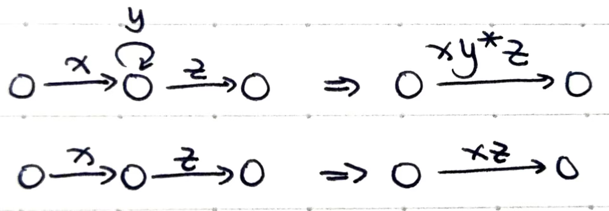
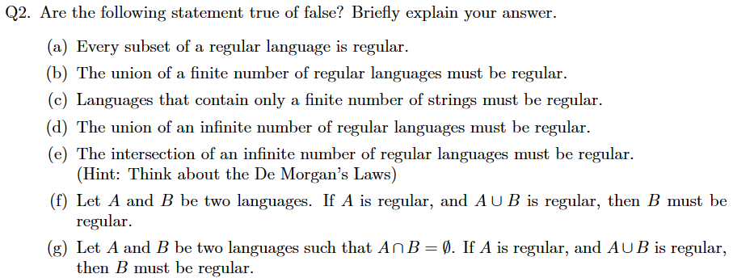
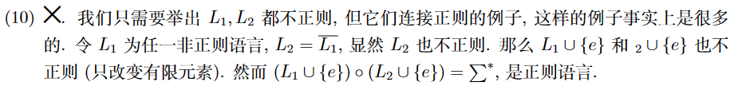
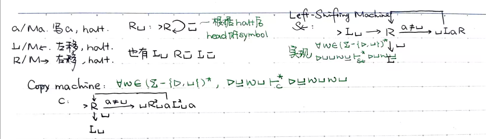
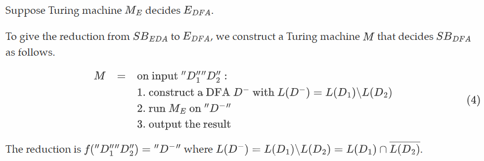

计算理论¶
约 4183 个字 9 张图片 预计阅读时间 14 分钟
Abstract
这课它不进脑子啊！
补天用的，不全。有问题请务必告诉我TAT
Admonitions 使用说明：
Danger
放易错点
Warning
放错过的题
Note
放要会证的 lemma
Example
放要会做的题
Tips
放一些思路
Info
其他
1 Finite Automata & Regular Languages¶
1.1 Language¶
- symbol
- alphabet \(\Sigma\)
- string \(w\) (length of string \(|w|\), empty string \(e\))
- \(\Sigma^N\), \(\Sigma^*\), \(\Sigma^+\)
- 字符串操作 concatenation \(w_1w_2\), exponentiation \(w^i\), reversal \(w^R\)
- language \(L\subseteq \Sigma^*\)
- 每个判定问题都和一个 language 对应
1.2 Deterministic Finite Automata¶
- DFA \(M = (K, \Sigma, \delta, s, F)\)
- 其中 transition function \(\delta : K \times \Sigma \to K\)
- configuration \((q, w) \in K \times \Sigma^*\)
- yields in 1 step with M \(\vdash_M\)
- yields with M \(\vdash_M^*\)
- 定义了 \(M\) accept 字符串的条件
- 定义了 \(M\) accept 的语言 \(L(M)\)
Danger
画 DFA 的时候，任何一个状态都要包含所有可能 symbol 的对应关系！即 \(\forall p \in K, \forall c \in \Sigma, \exists\ q \in K \text{ s.t. } \delta(p, c) = q\)
1.3 Non-Deterministic Finite Automata¶
- NFA \(M = (K, \Sigma, \Delta, s, F)\)
- 其中 transition relation \(\Delta\subseteq K\times (\Sigma\cup \{e\}) \times K\)
- configuration \((q, w) \in K \times \Sigma^*\)
- 定义了 yields in 1 step with M \(\vdash_M\), yields with M \(\vdash_M^*\), \(M\) accept 字符串的条件, \(M\) accept 的语言 \(L(M)\)
- Theorem. 任意 NFA \(M\) 都能找到一个 DFA \(M'\) 使得 \(L(M) = L(M')\)，反之同理。\(M\) 到 \(M'\) 的构造思路是，\(M'\) 中的状态集合 \(K'\) 是 \(M\) 中状态集合 \(K\) 的 power set。构造方法是，\(s'\) 是 \(s\) 的 \(\epsilon\)-closure，然后从它开始向外引边 (See here)。
{kind=link}
{kind=link}
1.4 Regular Languages¶
- A language is regular if it is accepted by some DFA or NFA
Note
课程和作业中构造 DFA 证明了，如果 \(A\) 和 \(B\) 是 regular languages，\(A\cup B\), \(A\cap B\), \(\bar A\) 都是 regular 的；构造 NFA 证明了，如果 \(A\) 是 regular 的，那么 \(A*\) 是 regular 的。
| 语言类型 / 封闭性 | \(\cup\) | \(\cap\) | \(\circ\) | \(\bar A\) | \(*\) |
|---|---|---|---|---|---|
| Regular |
Note: \(A - B = A \cap \bar B\)，因此如果 \(\cap\) 和 \(\bar A\) 都封闭，则差运算也封闭。
1.5 Regular Expression¶
- 用来描述 Regular Languages
- \(L(\varnothing) = \varnothing\), \(L(a) = \{a\}\)
- \(L(R_1\cup R_2) = L(R_1) \cup L(R_2)\), \(L(R_1R_2) = L(R_1)\circ L(R_2), L(R^*) = L(R)^*\)
- Precedence: \(* > \circ > \cup\)
- Theorem. 任意 NFA \(M\) 都能找到一个 REX \(R\) 使得 \(L(M) = L(R)\)，反之同理。\(M\) 到 \(R\) 的思路是，首先简化 \(M\) 使得不存在 \(s\) 的入边且 final state 仅有一个且无出边；然后每次删除一个 state，即对于它的每一对入边和出边：

{kind=link}
Warning
Assignment 2 Q6. 写 REX：\(\{w\in\{a,b\}^∗:\text{ the number of }b\text{'s in }w\text{ is divisible by 3}\}\)
答案
\(a^*\cup(a^*ba^*ba^*ba^*)^*\)
1.6 Pumping Theorem¶
Theorem. 若 \(L\) 是一个 regular language，则存在 pump length \(p\in \mathbb{Z}^*\) 使得 \(\forall w\in L\) with \(|w| \ge p\) 可被分为 3 个部分 \(w = xyz\)，满足：
- \(\forall i \ge 0, xy^iz\in L\)
- \(|y| > 0\)
- \(|xy| \le p\)
泵定理是 RL 的一个必要不充分条件。
Example
课程中用泵定理证明了 \(\{0^n1^n : n \ge 0\}\) 不是 regular 的，课后题目中也证明了 \(\{ww : w \in \{a, b\}^*\}\) 不是 regular 的。
这种证明通常的思路是，假设 \(L\) 是 RL，从而假设 pump length 为 \(p\)，然后构造一个含 \(p\) 且属于 \(L\) 的 string，证明它不符合 pumping theorem。
Info
常见的 non-regular languages 和简要证明思路 (\(p\) 是 pump length):
- \(L = \{0^n1^n\}\): 选 \(0^p1^p\)，则 \(xy^0z \notin L\)
- \(L = \{ww\}\), \(L = \{ww^R\}\): 选 \(ab^pab^p\) 和 \(b^paab^p\)，则 \(xy^0z \notin L\)
- \(L = \{0^m1^n\}\) where \(m > n\): 选 \(0^{p+1}1^p\)，则 \(xy^0z \notin L\) (\(m\ge n\) 也一样)
- \(L = \{0^m1^n\}\) where \(m < n\): 选 \(0^p1^{p+1}\)，则 \(xyyz \notin L\) (\(m\le n\) 也一样)
- 根据上面两个例子可以看出，union of 2 non-regular languages 不一定是 non-regular 的，例如 \(m > n\) 和 \(m \le n\) 的 union 是 \(0^*1^*\)
- \(L = \{0^m1^n\}\) where \(m \neq n\): 假设 regular，则 \((\{0^*1^*\} - L) \cap \{0^*1^*\} = \{0^n1^n\}\) is regular，矛盾
- \(L = \{1^n\}\) where \(n\) is prime: 选 \(1^k\) where \(k > p\) and \(k\) is prime，若 \(y = 1^s\) where \(0 < s \le p\)，则 \(\forall n \ge 0, k + (n - 1)s\) is prime。但取 \(n = k + 1\) 得到 \(k + ks = k(1 + s)\) is not prime，矛盾
- \(L \in \{0, 1\}^*\) where numbers of 0's and 1's are equal: 假设 regular，则 \(L \cup 0^*1^* = \{0^n1^n\}\) is regular，矛盾
Tips
Assignment 3 Q2 这样的题：
{kind=link}

多想一想 \(\{0^n1^n : n \ge 0\}\) 不是 regular 这个例子，同时善用德摩根律之类的各种东西把需要证明的结果凑出来，能凑出来就是 regular 的。
{kind=link}
Warning
RL 和 Non-RL、Non-RL 和 Non-RL 的 concat 都有可能是 RL。
前者的一个例子是，RL 为 \(\varnothing\)，则它们的 concat 也是 \(\varnothing\)。
后者的一个例子是：1
{kind=link}

Info
\((A\subseteq B)\equiv (A-B=\varnothing )\equiv(A\cup B=B)\equiv(A\cap B=A)\)
2 PushDown Automata & Context-Free Languages¶
Context-Free Languages 有 2 种描述：Context-Free Grammar 和 Pushdown Automata
2.1 Context-Free Grammars¶
- CFG \(G = (V, \Sigma, S, R)\)
- \(V\) 是 symbols, \(\Sigma\) 是 terminals, \(V - \Sigma\) 是 non-terminals
- \(R\) 中的每一条形如 \(A\to u\) 或记为 \((A, u)\)
- \(S\) 是 start symbol
- derives in 1 step with G \(\Rightarrow_G\)
- derives with G \(\Rightarrow_G^*\)
- 定义了 \(G\) generates \(w\) 的条件
- 定义了 \(G\) generates 的语言 \(L(G)\)
- 定义了 leftmost derivation / rightmost derivation / parse tree
- 歧义
Warning
Give a context-free grammar that generates the following language. Your grammar should use at most 2 non-terminals and should have at most 6 rules.
\(\{w\in\{0,1\}^∗: w\) has equal number of \(0\)'s and \(1\)'s\(\}\)
{kind=link}
2.2 Chomsky Norm Form¶
- A CFG is in CNF if each of its rules is of 3 forms:
- \(S \to e\)
- \(A \to BC\quad (B, C \in V - \Sigma - \{S\})\)
- \(A \to a\quad (a \in \Sigma)\)
- Theorem. Every CFG has an equivalent CFG in CNF
- 构造：\(S\) 在 rhs，则新增 \(S_0 \to S\) 作为新的 start symbol；如果右侧有 \(e\)，就删除这个 non-terminal，用到它的对应更改（且可能也要删除）；如果 rhs 有多个，拆开即可；如果只有一个 non-terminal，用它的 rhs 替代即可；如果 rhs 有 terminal，引入 non-terminal。
- Theorem. 用 CNF 生成一个长度为 \(n > 0\) 的 string，确切需要 \(2n-1\) 次 derivation，其中 \(n-1\) 次用 (b) 扩展长度，\(n\) 次用 (c) 替换成 terminal。
2.3 Pushdown Automata¶
- PDA = NFA + Stack
- PDA \(P = (K, \Sigma, T, \Delta, s, F)\)
- \(T\) 是 stack alphabet
- transition relation \(\Delta \subseteq (K \times (\Sigma \cup \{e\}) \times T^*)\times(K \times T^*)\)，表示当前状态接受某个 symbol 并从栈上 pop 出某个字符串后，会转移到另一个状态并在栈上 push 另一个字符串
- Configuration \((p, w, \alpha) \in (K \times \Sigma^* \times T^*)\)，依次表示 current state, unread input, stack content
- 定义了 \(\vdash_P\), \(\vdash_P^*\), \(P\) accept 字符串的条件（到终态且栈为空）, \(P\) accept 的语言 \(L(P)\)
- 我们聊的 PDA 是 non-deterministic 的。它比确定性 PDA 的运算能力强，因为确定性的 PDA 无法用单个 stack 模拟多个 stack。这与 DFA = NFA 不同
Example
课程和作业中给出了 \(L \in \{0, 1\}^*\) where numbers of 0's and 1's are equal 等的 PDA。
Danger
语言中包含「小于」之类的关系的时候，记得给出办法把栈清空。
2.4 CFG <=> PDA¶
- CFG \(G\) \(\to\) PDA \(P\): 在栈上 non-deterministically generate a string using \(G\), compare it to input, accept if match.
- 定义 Simple PDA: A PDA is simple，如果只有一个终态，且每个 transition 要么只 pop 一个，要么只 push 一个。
- PDA \(\to\) Simple PDA \(\to\) CFG: 略
2.5 Pumping Theorem for CFL¶
Theorem. 若 \(L\) 是一个 CFL，则存在 pump length \(p\in \mathbb{Z}^*\) 使得 \(\forall w\in L\) with \(|w| \ge p\) 可被分为 3 个部分 \(w = uvxyz\)，满足：
- \(\forall i \ge 0, uv^ixy^iz\in L\)
- \(|v| + |y| > 0\)
- \(|vxy| \le p\)
泵定理是 CFL 的一个必要不充分条件。
Example
课程中用泵定理证明了 \(L = \{a^nb^nc^n : n \le 0\}\) 不是 CFL。
Info
不严谨地说，如果某个语言能够被切分成若干无关的段，每段是一个 RL 或者关于某个「中点」「中心对称」（从而能够借助堆栈的后进先出特性来维护），那么这个语言就是上下文无关的。
常见的 non-context-free languages:
- 涉及三个或以上相关的计数、比较的，因为栈没法比那么多次
- \(a^nb^nc^n\)
- \(a^ib^jc^k\), where \(i > j > k\)
- \(w \in \{a, b, c\}^*\) where the numbers of a's, b's and c's are equal
- 不过它的补是 context-free 的，因为它可以写成 #a != #b, #a != #c, #b != #c 的并。这是一对有用的例子。
- 无法用栈线性比较的
- \(a^{n^2}\)
- \(a^m\) where \(m\) is prime
- 需要用到非栈顶信息的，因为栈只能访问栈顶
- \(a^mb^nc^md^n\)
- \(ww\): 选 \(w = a^pb^p\)，讨论 \(vxy\) 在中间或者左半边/右半边的情况
2.6 CFL¶
A language is context-free if it's accepted by some PDA.
Note
Assignment 5 Q5 中证明了 RL 是 CFL。用 NFA 构造 PDA 即可。
Note
CFL 对 \(\cup\), \(\circ\), \(*\) 封闭，但对 \(\cap\), \(\bar A\) 不封闭。
证明 CFL 对并封闭，只需合并两个 CFL 的 CFG；对连接封闭，只需添加 \(S\to S_AS_B\)；对克林闭包封闭，只需添加 \(S\to S_AS | e\)。
不封闭的反例：我们证明了 \(L = \{a^nb^nc^n : n \le 0\}\) 不是 CFL；而它又是 \(L_1 = \{a^nb^nc^m : n \le 0, m \le 0\}\) 和 \(L_2 = \{a^nb^mc^m : n \le 0, m \le 0\}\) 的交，因此 CFL 对交运算不封闭。
由于 CFL 对并封闭，那么假设 CFL 对补封闭，则由德摩根律，CFL 对交封闭，矛盾。因此 CFL 对补不封闭。
Note
但是，Assignment 6 Q3 中证明了 CFL 和 RL 的交是 CFL。CFL 对交不封闭的核心原因是我们无法用一个栈模拟两个栈；但是在 CFL 和 RL 交时只需要一个栈就够了。
因此，证明一个 language 不是 CFL，还可以通过反证法，说明它和一个 RL 的交是一个已知的 non-CFL。
因此，\(L-R = L \cap \bar R\) 是 CFL；但 \(R-L = R \cap \bar L\) 不一定是 CFL，因为 CFL 对补不封闭。一个例子是，\(R = \{a, b, c\}^*, L = \bar A\), 其中 \(A = \{w \in \{a, b, c\}^*\}\) where the numbers of a's, b's and c's are equal。\(L\) 是 CFL，\(A\) 不是，而 \(R - L = A\)。
| 语言类型 / 封闭性 | \(\cup\) | \(\cap\) | \(\bar A\) | \(\circ\) | \(*\) |
|---|---|---|---|---|---|
| Context-Free |
3 Turing Machines¶
3.1 Turing Machines¶
- TM \(M = (K, \Sigma, \delta, s, H)\)
- \(K\) 是 states，\(s\) 是 initial state，\(H\) 是 halting states
- \(\Sigma\) 是 alphabet，包含 left end symbol ▷ 和 blank symbol ⌴
- transition function \(\delta: (K - H) \times \Sigma \to K \times (\Sigma \cup \{\to, \leftarrow\})\)，表示当前 state 接受当前 head 所指的 symbol 后转换到某个 state，并且 head 写入某个 symbol 或者向左 / 向右移动，且满足：
- 到了最左边，下次一定向右走
- 不能往某个格子里写入 ▷
- configuration \((q, ▷\alpha, \beta) \in K \times ▷(\Sigma - \{▷\})^* \times ((\Sigma - \{▷\})^*((\Sigma - \{▷, ⌴\})^*)\cup \{e\})\)，依次表示当前状态、head 及左边的 string、head 右边的 string（到最后一个非 ⌴ symbol 为止）
- TM 从初始状态开始，每次读取 head 所指格子中的 symbol 并根据 transition function 的操作进行，直到遇到某个停机状态。
构造若干 TM（按定义构造，或者组合若干 TM）：
{kind=link}

3.2 Usages¶
TM 可以用来 recognize languages。
Semidecide & Recursively Enumerable¶
- 定义 input alphabets \(\Sigma_0 = \Sigma - \{▷, ⌴\}\)，因此 TM 也可以写成 \(M = (K, \Sigma_0, \Sigma, \delta, s, H)\)
- 定义 \(L(M) = \{w \in \Sigma_0^* : (s, ▷⌴, w) \vdash_M^* (h, \alpha) \text{ for some } h \in H\}\)，即 the set of strings that \(M\) halts on
- 称 \(M\) semidecides \(L(M)\)
- 如果某个 language 被某个 TM semidecide，则称它是 recursively enumerable 的
Decide¶
- 如果 \(M = (K, \Sigma_0, \Sigma, \delta, s, \{y, n\})\) 是一个 TM，那么如果对于 \(L\) 中的任一字符串 \(w\)，要么 \((s, ▷⌴, w) \vdash_M^* (y, \alpha)\) （称为 \(M\) accepts \(w\)），要么 \((s, ▷⌴, w) \vdash_M^* (n, \alpha)\) （称为 \(M\) rejects \(w\)），则称 \(M\) decides \(L\)。
- 如果某个 language 被某个 TM decide，则称它是 recursive 或 decidable 的
TM 也可以用来 compute functions。
Compute¶
- 如果 \(M = (K, \Sigma_0, \Sigma, \delta, s, H)\) 是一个 TM，对 \(w \in \Sigma_0^*\)，如果 \((s, ▷⌴, w) \vdash_M^* (h, ▷⌴, y)\) for some \(h \in H, y \in \Sigma_0^*\)，则称 \(y\) 是 the output of \(M\) on \(w\)，记为 \(y = M(w)\)。
- 如果对 \(f: \Sigma_0^* \to \Sigma_0^*\) 有 \(\forall w \in \Sigma_0^*, M(w) = f(w)\)，则称 \(M\) computes \(f\)。
- 如果某个 function 被某个 TM compute，则称它是 recursive 或 computable 的
3.3 Extensions¶
我们说明对 TM 的各种扩展不会增强其计算能力；即能使用没有扩展的 TM 模拟之：
- multiple tapes：\(\Sigma' = (\Sigma \cup \underline\Sigma)^k\) （\(\underline\Sigma\) 是用来模拟多个 head 的）
- 2-way infinite tape：折成两条
- multiple heads: 也是 \(\Sigma' = (\Sigma \cup \underline\Sigma)^k\)
- 2-dimentional tape: 按 BFS 序折成一维
- random access: 多走几步就行
- non-deterministic——
Non-deterministic Turing Machines¶
- NTM \(M = (K, \Sigma, \Delta, s, H)\)
- \(M\) semidecides \(L(M)\)，如果有 branch halts 则在 \(L(M)\) 中
- \(M\) decides \(L\)，如果所有分支都能 halt，且存在分支 accept
- 例如，\(C = \{w : w\ 是合数\}\)，则可以构造 NTM 非确定性地猜 \(p < w\) 和 \(q < w\)，如果 \(w == pq\) 则 halts with y，否则 halts with n。
Theorem. An NTM can be simulated by a DTM.
大概的思路是，NTM 就是棵树，可以用 DTM 来 BFS 搜。搜的时候可以用 3-tape，#1 存 input，#2 存 BFS 序列 (1, 2, 3, 11, 12, 21, 22, 31, 32, 111, ...)，#3 用来根据 #2 模拟，每次尝试如果没 halt 就恢复 #1 的 input
3.4 Description¶
Church-Turing Thesis. 大意是说，算法是一个在所有 input 都 halt 的 TM；算法用来解决 decision problem，而这样的 TM decide 某个语言。因此我们可以用算法来描述 TM。
因此，TM 有 3 种描述方式：
- formal definition
- implement-level description (diagram)
- high-level description (pseudo code)
用伪代码表述的一个问题是编码。事实上，任何有限集合都能编码，任何由有限集合组成的有限元组也能编码。（因此 TM 也能被编码。）
4 Reduction, Undecidability and Grammar¶
4.1 Reduction¶
A 到 B 的归约就是找到一个 recursive / computable 的 function \(f : \Sigma_A^* \to \Sigma_B^*\) 使得 \(\forall x \in \Sigma_A^*, x\in A \Leftrightarrow f(x) \in B\)
即，\(A \le B\)
构造了一些语言对应的图灵机：
- \(A_\text{DFA}\) = {"D""w" : D is a DFA that accepts w}: run M on w, if accept accept, else reject
- \(A_\text{NFA}\): NFA -> DFA, run the TM for \(A_\text{DFA}\), output the result
- reduction: f("N""w") = "D""w"
- \(A_\text{REX}\): REX -> NFA, ...
- \(E_\text{DFA}\): BFS, find path from \(s\) to some \(f\in F\)
- \(EQ_\text{DFA}\): f("D1""D2") = "D" where D = D1 \(\oplus\) D2
- \(A_\text{CFG}\): 转为 CNF，尝试所有 length = 2|w| - 1 的 derivation
- \(A_\text{PDA}\): PDA -> CFG
- \(E_\text{CFG}\): 将 e 和所有 terminals 标记，然后将标记反向传递
- \(E_\text{PDA}\): PDA -> CFG
归约可以这样写：
{kind=link}

4.2 Undecidability¶
Note
Theorem. 如果存在一个从 A 到 B 的 reduction \(f\)，如果 B 是 REC，则 A 也是 REC。
证明大概是，构造 A 的一个 TM，如果 \(M_B\) 接受 \(f(w)\) 则接受，否则拒绝。
Theorem. 如果存在一个从 A 到 B 的 reduction \(f\)，如果 B 是 RE，则 A 也是 RE。
证明大概是，构造 A 的一个 TM，run \(M_B\) on \(f(w)\)，则若 \(M_B\) 则停机，否则 loop。
- 定义了单射 injection、满射 surjection、双射 bijection
- 定义了两个集合等势 equinumerous，如果存在它们之间的一个双射
- 定义了集合 A 可数 countable，如果 it's finite or is equinumerous with \(\mathbb{N}\)；否则是 uncountable 的
- Theorem. 对于集合 A，以下表述等价：
- A is countable
- 存在 injection \(f: A \to \mathbb{N}\)
- 存在一种枚举 A 种元素的方式，使得 A 中的任一元素 a 都能在 n 步内被枚举到，且 n 只取决于 a
- 证明思路大概是，(a) => (c): 有双射，因此 a 可以在 \(f(a) + 1\) 步内被枚举到；(c) => (b): \(f(a) = 首次枚举到时的步数\)；(b) => (a): 将 A 按 \(f(a)\) 排序，\(g(a) = a 的下标\) 形成双射
- Corollary. 可数集合的任意子集也可数
存在非 RE 的语言¶
- Theorem. 给定 alphabet \(\Sigma\)，\(\Sigma^*\) 是可数的。
- 由于 TM 可编码，因此所有 TM 的集合是可数的。
- 由于每个语言都是 \(\Sigma^*\) 的子集，因此每个语言都是可数的。
- Theorem. \(\mathcal{L}\) 是 \(\Sigma\) 上所有语言的集合，则 \(\mathcal{L}\) 是不可数的。
- 用 对角化 diagonalization 证明，即假设 \(\mathcal{L}\) 可数，则将其列举；所有字符串也可列举；定义语言 \(D = \{s_i : s_i \notin L_i\}\)，因此 \(D\) 与任一 \(L_i\) 都不同，因此 \(D\notin\mathcal{L}\)，矛盾。
- 由上面两条得知，所有 TM 的集合是可数的，但所有语言的集合是不可数的，而每个 TM 只能 semidecide 一种语言，因此一定存在不是 RE 的语言。
非 RE 的语言，以及 RE 但非 REC 的语言¶
- \(H\) = {"M""w" : M is a TM that halts on w} 是 RE 但非 REC 的。
- \(H_d\) = {"M" : M is a TM that does not halt on "M"} 不是 RE 的。
- 证明 \(H\) 是 RE 的，只需要构造 Universal TM U = run M on w 即可
- 证明 \(H_d\) 不是 RE 的：用反证法，假设存在 \(M_D\) semidecides \(H_d\)，那么 run \(M_D\) on "\(M_D\)"，得到 \(M_D\) halts on "\(M_D\)" iff \(M_D\) doesn't halt on "\(M_D\)"，矛盾，因此不是 RE 的
- 证明 \(H\) 不是 REC 的：用反证法，假设是 REC 的，存在 \(M_H\) decides \(H\)，则能构造 \(M_D\) = run \(M_H\) on "M""M", accept if reject, else reject。\(M_D\) decides \(H_d\)，与 \(H_d\) 不是 RE 的矛盾，因此 \(H\) 不是 REC 的
4.3 Closure Properties¶
| 语言类型 / 封闭性 | \(\cup\) | \(\cap\) | \(\bar A\) | \(\circ\) | \(*\) |
|---|---|---|---|---|---|
| Regular | |||||
| Context-Free | |||||
| Recursively Enumerable | |||||
| Recursive |
Note: \(A - B = A \cap \bar B\)，因此如果 \(\cap\) 和 \(\bar A\) 都封闭，则差运算也封闭。
证明：
- REC
- \(\cup\) 任一 accept，\(\cap\) 都 accept，\(\bar A\) 翻转结果
- \(\circ\)：构造 TM，遍历所有可能的拆分，分别用两个 TM 跑，如果都 accept 就 accept
- \(*\)：更多拆分方案
- RE
- \(\cap\) 即依次运行
- \(\cup\) 构造 TM 并行运行两个 TM
- \(\circ\) 和 \(*\) 如 REC 那样拆分，但是用 NTM non-deterministically 拆
- \(\bar A\)——
Lemma. \(A\) 是 REC iff \(A\) 和 \(\bar A\) 都是 RE
证明思路大概是，如果都是 RE，对于任意输入，两个 TM 必有且仅有一个停机；并行跑这两个 TM，根据哪个停机决定 accept 还是 reject。
而 H 是 RE 但非 REC，因此 \(\bar H\) 不是 RE，因此 RE 对 \(\bar A\) 不封闭。
4.4 一些证明思路¶
证明某个语言非 REC¶
- 找到一个从 H 或其他已知 non-REC 的语言到 A 的 reduction
- 或者用反证法
Rice's Theorem.
证明某个语言是 REC¶
- 构造 TM decide A
- 或者找到从 A 到已知 REC 语言的归约
- 或者使用 Lemma. \(A\) 是 REC iff \(A\) 和 \(\bar A\) 都是 RE
证明某个语言非 RE¶
- 使用 Lemma. \(A\) 是 REC iff \(A\) 和 \(\bar A\) 都是 RE
- 或者找到已知 non-RE 的语言到 A 的 reduction
证明某个语言是 RE¶
- 构造 TM semidecide A
- 或者找到从 A 到已知 RE 语言的归约
4.5 剩下的东西¶
- A language L is Turing enumerable iff it's RE
- A language L is lexicographically Turing enumerable iff it's REC
- Grammar：和 CFG 的区别是左边可以有好几个 symbol，但是至少有一个 non-terminal。也是 \(G = (V, \Sigma, S, R)\)
- 显然，CFG 也是 Grammar
- Theorem. 一个语言由一个 Grammar 产生，当且仅当它被某个 TM semidecided，即它是 RE 的。
5 Numerical Functions and Recursion Theorem¶
6 Computational Complexity¶
颜色主题调整
评论区~
有用的话请给我个赞和 star =>
快来跟我聊天~